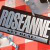

Changing Perceptions
Background
The same day we were chosen by Viacom as the agency for the syndication of Roseanne, Roseanne Barr's public act in a sports stadium inflamed the American public. In response, we developed a strategy that would help overcome doubts about Roseanne and Roseanne's viability in the minds of the local station programmer who would be making the buy decision.
Our first recommendation was to create a tape that proved Roseanne Barr to be not only a great comedienne with a highly rated TV program, but an intelligent, savvy marketer who showed every indication of being around for the long haul. The video that resulted was a serious interview with Roseanne, interspersed with hilarious cuts from the show that illustrate her point-of-view.
The advertising theme "Get Real! Get Roseanne," reinforced Roseanne's public persona, while sending a strong message that the syndication of Roseanne was a not-to-be-missed opportunity for local stations. This theme was integrated into every phase of the marketing program, from stationery and video labels to sales brochures and Roseanne lunch boxes (complete with a Roseanne chocolate "barr").